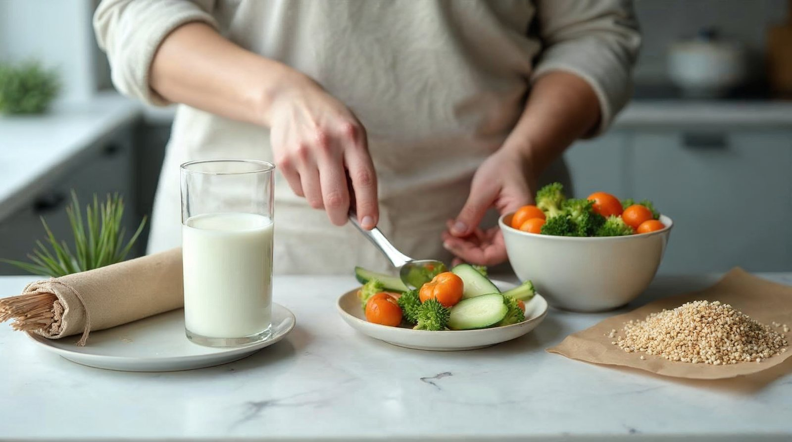
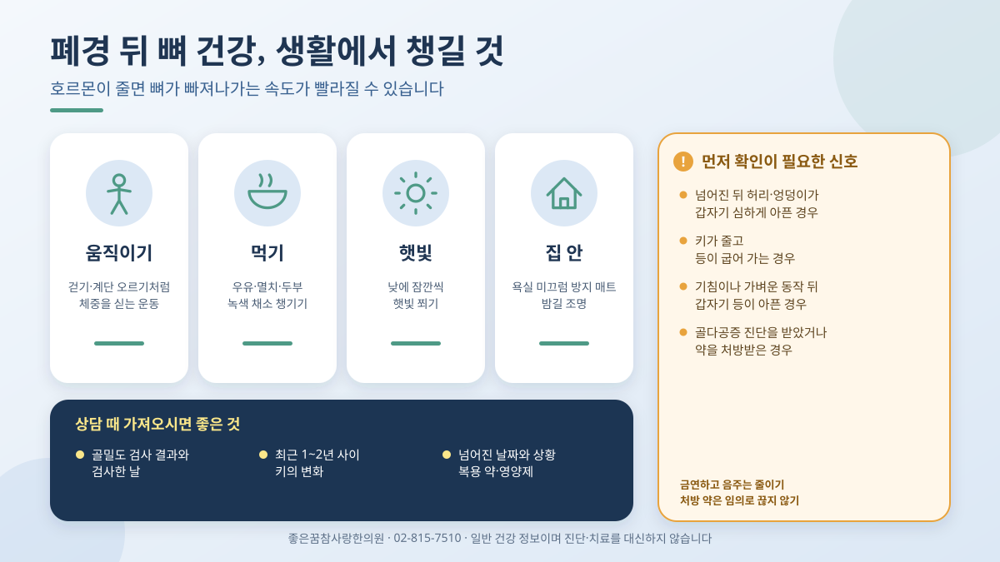

이종호 한의사 감수좋은꿈참사랑한의원 대표원장 (한의사 면허번호 19769)발행 2026-11-23 · 수정 2026-11-26
이 글의 차례
폐경 뒤에는 뼈가 빠르게 약해질 수 있는 것으로 알려져 있습니다. 뼈가 약해져도 처음에는 아무 느낌이 없는 경우가 많아, 골밀도 검사로 지금 상태를 알고 식사·운동·넘어짐 예방을 미리 챙기는 것이 중요합니다. 진단과 약은 해당 진료과를 따르고, 한의원에서는 근력과 생활을 함께 살핍니다.
왜 이런 불편이 생길 수 있나요
- 폐경으로 여성호르몬이 줄면 뼈가 만들어지는 속도보다 빠져나가는 속도가 빨라질 수 있습니다.
- 활동이 줄고 근력이 약해지면 뼈에 주는 자극도 줄어듭니다.
- 칼슘과 비타민 D가 부족한 식사, 햇빛을 거의 쬐지 않는 생활과 관련될 수 있습니다.
- 흡연과 음주, 일부 약(스테로이드 등)도 영향을 줄 수 있습니다.
먼저 이렇게 여쭙니다
- 폐경은 언제였고 골밀도 검사를 받으신 적이 있나요?
- 키가 줄었거나 등이 굽었나요?
- 넘어진 적이나 허리를 삐끗한 적이 있나요?
- 복용 중인 약이 있나요? (골다공증 약, 스테로이드 등)

일상에서 먼저 해 볼 수 있는 것
- 걷기와 계단 오르기처럼 체중을 싣는 운동하기
- 칼슘이 든 음식(우유, 멸치, 두부, 녹색 채소) 챙기기
- 칼슘·비타민 D 영양제를 따로 먹을지, 얼마나 먹을지는 주치의와 상의하기
- 낮에 잠깐씩 햇빛 쬐기
- 금연하고 음주 줄이기
- 욕실 미끄럼 방지 매트, 밤길 조명처럼 넘어지지 않게 집 안 정리하기
한의원에서 함께 살필 수 있는 경우
- 허리나 무릎이 쉽게 시큰거리고 기운이 떨어진 경우 근력과 생활 습관을 함께 살핍니다.
- 걷기가 힘들고 자주 피곤한 경우 움직임과 몸의 균형을 함께 살핍니다.
- 밤에 쉽게 깨고 잠이 얕은 경우 수면 리듬을 함께 살핍니다.
좋은꿈참사랑한의원에서는 폐경 뒤 달라진 몸의 이야기와 검사 결과를 먼저 듣고, 진맥을 기본으로 하고 필요하다고 판단될 때 설진·복진과 인바디 770을 더해 근육량을 함께 살핍니다. 그 뒤 근력과 생활 계획, 침·한약 상담 등을 상태에 맞춰 정하며, 골밀도 진단과 약은 해당 진료과에서 받도록 안내합니다.

언제 검사를 받고 언제 바로 진료가 필요할까요
- 폐경 뒤 골밀도 검사를 받아 본 적이 없다면, 증상이 없더라도 정형외과·내과·산부인과 같은 의과나 건강검진기관에 검사 시기를 상의해 보세요. 국가건강검진에 골밀도 검사가 포함되는 나이가 있어 대상인지 확인해 보시면 좋습니다.
- 이미 검사를 받았다면 다음 검사 시기를 담당 의사에게 확인해 적어 두세요.
- 허리나 무릎이 시큰한 정도이고 넘어진 일이 없다면, 걷기와 근력 운동을 조금씩 늘리며 2~4주 지켜볼 수 있습니다.
- 2~4주 생활을 조정해도 통증이 그대로이거나 걸을 수 있는 거리가 점점 줄어든다면 진료를 받아 보시길 권합니다.
- 넘어진 뒤 갑자기 심하게 아픈 경우처럼 바로 진료가 필요한 신호는 아래 '이런 증상은 먼저 확인이 필요합니다'에 모아 두었습니다.
이런 경우를 예로 들 수 있습니다
- 예를 들어 건강검진에서 뼈가 약해지기 시작했다는 설명을 듣고 걱정이 되어 운동을 갑자기 크게 늘린 경우, 무릎이나 발뒤꿈치에 부담이 갈 수 있어 지금 할 수 있는 걷기 시간부터 정해 조금씩 늘려 가는 방법을 함께 정리합니다.
- 예를 들어 밤에 땀이 나 자주 깨고 새벽에 화장실에 가다 어지러웠던 경우, 넘어질 위험과 잠을 함께 살피며 밤길 조명과 일어서는 속도를 함께 점검합니다.
- 예를 들어 골다공증 약을 먹으면서 영양제를 여러 가지 더 챙기고 있는 경우, 성분이 겹치지 않는지 처방한 의사나 약사와 상의하시도록 권하고, 한약 상담이 필요하면 복용 중인 약 목록을 먼저 확인합니다.
스스로 점검해 보세요
- 폐경 뒤 골밀도 검사를 받은 적이 없거나 결과를 모른다
- 예전보다 키가 줄었다는 말을 들었다
- 하루 걷는 시간이 30분이 안 되는 날이 많다
- 우유·두부·멸치·녹색 채소를 거의 먹지 않는다
- 낮에 바깥 햇빛을 쬐는 시간이 거의 없다
- 최근 1년 사이 넘어지거나 넘어질 뻔한 적이 있다
- 의자에서 팔을 짚지 않고 일어나기 어렵다
이 목록으로 뼈 상태를 알 수는 없습니다. 해당 항목이 많다면 골밀도 검사 여부를 해당 진료과와 상의하고, 생활에서 바꿀 점을 정리하는 데 참고해 주세요.
처음 오시면 이렇게 진행됩니다
접수 때 골밀도 검사 결과지와 복용 중인 약·영양제 목록을 가져오시면 좋습니다. 원장이 폐경 시기와 그 뒤 달라진 몸의 이야기, 넘어진 적이 있는지를 여쭙고, 진맥을 기본으로 필요하다고 판단될 때 설진·복진을 더합니다.
근육량을 함께 볼 필요가 있다고 판단되면 인바디 770으로 측정하고, 걷는 모습과 의자에서 일어서는 동작, 한쪽 다리로 서는 균형을 확인합니다. 그 뒤 오늘 진행할 내용과 이유를 설명드리고, 근력·식사·햇빛·넘어짐 예방을 묶은 생활 계획과 다음 방문 간격을 정합니다.
골밀도 진단이나 약 처방이 필요해 보이면 해당 진료과 진료를 안내하며, 한의원 진료가 이를 대신하지는 않습니다.
이렇게 기록해 오시면 상담이 쉬워집니다
- 골밀도 검사 결과와 검사한 날
- 최근 1~2년 사이 키의 변화
- 넘어진 적이 있다면 날짜와 상황
- 복용 중인 약과 영양제
이런 증상은 먼저 확인이 필요합니다
- 넘어진 뒤 허리나 엉덩이, 손목이 갑자기 심하게 아픈 경우
- 넘어진 뒤 일어서기 어렵거나 다리에 체중을 싣기 힘든 경우
- 기침이나 가벼운 동작 뒤 등이나 허리가 갑자기 심하게 아픈 경우
- 키가 눈에 띄게 줄고 등이 굽어 가는 경우
- 골다공증 약을 먹는 중에 새로운 통증이나 불편이 생긴 경우
넘어지거나 가벼운 동작 뒤 통증이 심하거나 걷기 어렵다면 한의원 진료를 기다리지 말고 정형외과나 가까운 응급실에서 영상 검사를 먼저 받으세요.
골다공증 약과 칼슘·비타민 D 영양제는 주치의와 상의해 정하고, 약을 먹는 중 생긴 불편도 처방한 의사에게 먼저 알리세요. 복용 중인 약은 처방한 의사와 상의 없이 줄이거나 끊지 않습니다.
관련 글
- 갱년기에 밤마다 땀에 젖어 깨는 날이 많을 때는 어떻게 하나요?
- 체중은 정상인데 인바디에서 근육량이 적게 나왔어요
- 70대 어르신 집의 욕실과 현관은 낙상을 줄이려면 어떻게 점검하나요?

여쭙는 것
- 폐경은 언제였고 골밀도 검사를 받으신 적이 있나요?
- 키가 줄었거나 등이 굽었나요?
- 넘어진 적이나 허리를 삐끗한 적이 있나요?
생활에서 해 볼 것
- 걷기와 계단 오르기처럼 체중을 싣는 운동하기
- 칼슘이 든 음식(우유, 멸치, 두부, 녹색 채소) 챙기기
- 칼슘·비타민 D 영양제를 따로 먹을지, 얼마나 먹을지는 주치의와 상의하기
한의원에서 함께 살필 것
- 허리나 무릎이 쉽게 시큰거리고 기운이 떨어진 경우 근력과 생활 습관을 함께 살핍니다.
- 걷기가 힘들고 자주 피곤한 경우 움직임과 몸의 균형을 함께 살핍니다.
- 밤에 쉽게 깨고 잠이 얕은 경우 수면 리듬을 함께 살핍니다.
먼저 확인이 필요한 신호
- 넘어진 뒤 허리나 엉덩이, 손목이 갑자기 심하게 아픈 경우
- 넘어진 뒤 일어서기 어렵거나 다리에 체중을 싣기 힘든 경우
- 기침이나 가벼운 동작 뒤 등이나 허리가 갑자기 심하게 아픈 경우
한눈에 보는 표
| 구분 | 핵심 |
|---|---|
| 여쭙는 것 | 폐경은 언제였고 골밀도 검사를 받으신 적이 있나요? 키가 줄었거나 등이 굽었나요? |
| 생활에서 해 볼 것 | 걷기와 계단 오르기처럼 체중을 싣는 운동하기 칼슘이 든 음식(우유, 멸치, 두부, 녹색 채소) 챙기기 |
| 한의원에서 함께 살필 것 | 허리나 무릎이 쉽게 시큰거리고 기운이 떨어진 경우 근력과 생활 습관을 함께 살핍니다. 걷기가 힘들고 자주 피곤한 경우 움직임과 몸의 균형을 함께 살핍니다. |
| 먼저 확인이 필요한 신호 | 넘어진 뒤 허리나 엉덩이, 손목이 갑자기 심하게 아픈 경우 넘어진 뒤 일어서기 어렵거나 다리에 체중을 싣기 힘든 경우 |
자주 묻는 질문
골밀도 검사는 어디서 하나요?
정형외과·내과·산부인과 같은 의과나 건강검진기관에서 받을 수 있습니다.
한의원에서는 어떻게 살피나요?
통증과 자세, 활동, 식사, 잠을 함께 묻고 필요하면 병원 검사를 안내합니다.
골다공증 약을 먹고 있어요.
약은 임의로 끊거나 줄이지 말고 처방한 의사와 상의하세요. 함께 먹는 영양제도 알려 주세요.
좋은꿈참사랑한의원은 재진 때 지난번 이야기부터 이어서 여쭙니다. 진료시간과 예약은 오시는 길에서 확인하세요.
어디서 상담받을 수 있나요?
좋은꿈참사랑한의원은 서울 동작구 만양로2길 2 신성빌딩 3층·5층(서울 동작구 상도동, 7호선 상도역 3번 출구 근처)에 있습니다. 한의사 3명(이종호 대표원장, 조영기 수석진료원장, 정원영 진료원장)이 진료합니다. 진료시간은 평일 09:30~20:00(점심 13:00~14:00), 토·일·공휴일 09:30~15:00이며, 방문 전 전화로 확인을 권합니다. 예약은 네이버 예약, 카카오톡 상담, 전화 02-815-7510로 받습니다.
이 글은 일반적인 건강 정보이며 개인의 진단이나 치료를 대신하지 않습니다. 증상이 있거나 복용 중인 약이 있다면 진료를 통해 확인하세요. 치료 효과는 개인마다 다를 수 있습니다.
작성 기준: 일반적으로 알려져 있는 건강 정보를 참고해 정리했습니다(대표원장 감수). 증상 기록은 1~2주 동안 하루 1회, 비슷한 시간에 적어 오시면 지난 상태와 비교하기 쉽습니다.